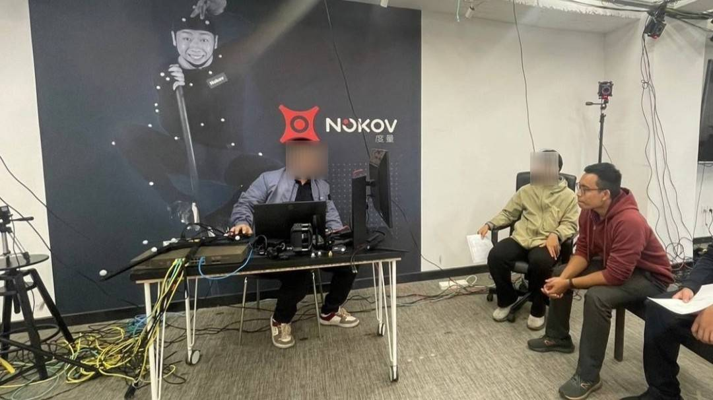
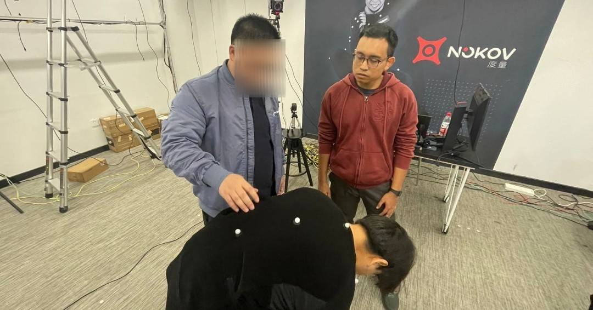

MOTION CAPTURE TRAINING
NOKOV Optical Motion Capture System

Motion Capture
(Mocap) is a technology used to digitally record human or object movements with high precision. It plays a crucial role in sports science by enabling detailed movement analysis, helping athletes refine their techniques, minimize injury risks, and optimize training programs. By capturing biomechanical data in real-time, motion capture provides valuable insights that enhance performance assessment and rehabilitation strategies.
I have a deep interest in Motion Capture technology because I believe it is a powerful tool for improving sports training and movement analysis.

I attended the NOKOV Motion Capture Training at the Beijing Headquarter, where I gained hands-on experience in motion capture technology for various applications. The training covered:
- Introduction to NOKOV Motion Capture and its use in sports analysis.
- Creating a markerset, including the Helen Hayes markerset.
- Fixing lost markers using cubic joint interpolation.
- Exporting motion capture data in C3D and BVH formats.
- Implementing motion capture for VR gaming.
- Streaming motion capture data to Unreal Engine for real-time animation.

Attending this training significantly enhanced my expertise in Motion Capture systems and reinforced my ability to apply this technology in sports science, VR, and game development. My passion for this field continues to grow, and I am eager to explore innovative ways to integrate Motion Capture into various applications that push the boundaries of movement analysis and interactive experiences.